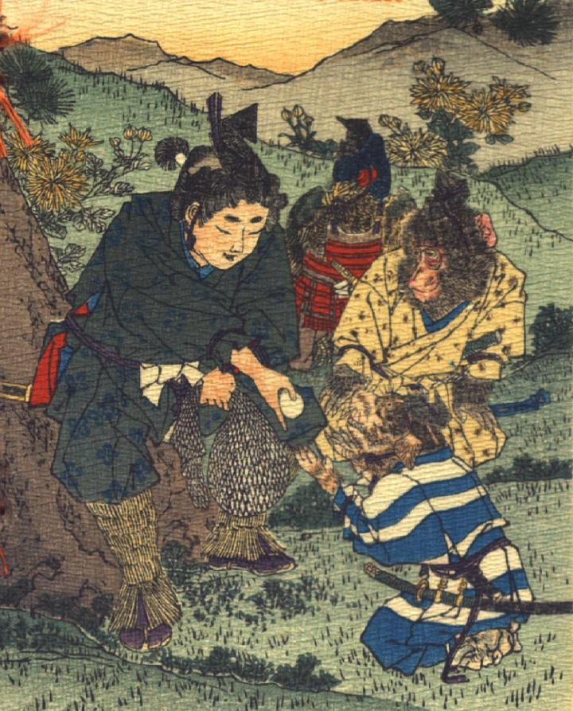

桃太郎から犬がきび団子を受け取っている。その後ろに、猿と雉がひかえており、自分の順番を待っている。
著作者：J.E.de Campos／出典：親書誌：U426_nichibunken_0115：Momotaro／日付：2006／資源識別子：U426_nichibunken_0115_0001_0000
Copyright (c)2010- International Research Center for Japanese Studies, Kyoto, Japan. All rights reserved.